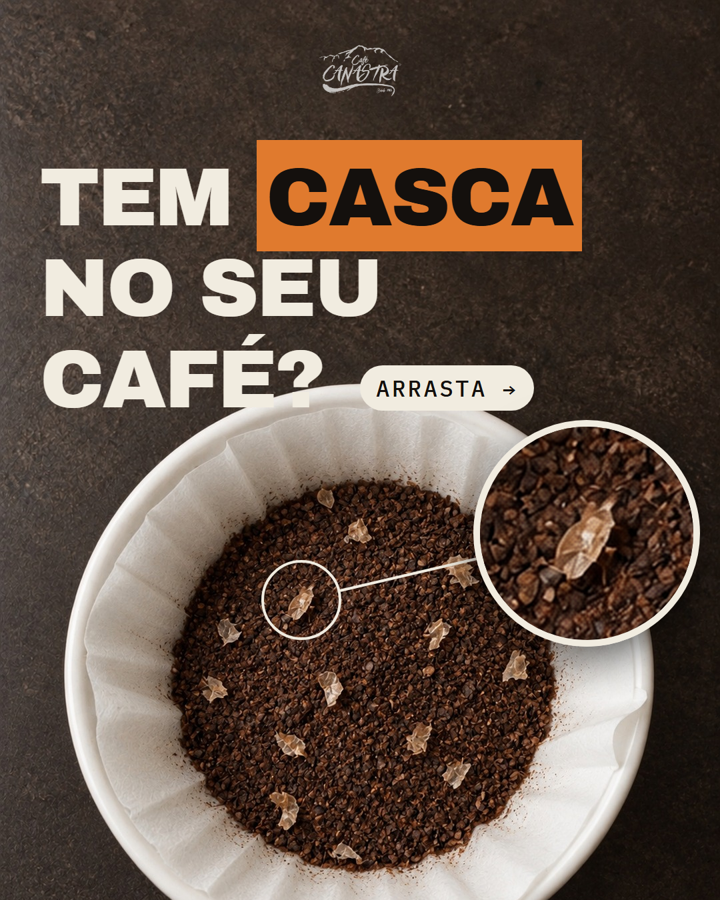

Café Canastra vendendo de verdade na internet: marketplaces, conteúdo e afiliados.
Marketplaces prontos para vender e conteúdo desde o primeiro dia.
Mercado Livre, Shopee, TikTok Shop e Amazon com preço certo e anúncio forte.
Afiliados e criadores das próprias plataformas vendendo pela gente.
Instagram e TikTok com constância, levando gente para a loja online.
Meses de teste. No fim, a gente olha os números juntos e decide o próximo passo.

Categoria Alimentos e bebidas liberada em 15/10. Dá para vender café lá.
Mais de 500 vídeos e materiais analisados. Estratégia e calculadora de preço para cada um.
Já sabemos o que derrubou a reputação e qual o preço certo do 1 kg e do kit.
Mercado Livre, Instagram, consulta de números para a equipe e melhorias no CRM: 13 já entregues.
Voz e público definidos, Reels em motion e 130 vídeos virais de café estudados.
Atendimento no WhatsApp, vendas no Bling e o resultado voltando para o Google e a Meta.
Mercado Livre arrumado, Shopee aberta, TikTok Shop com catálogo e Amazon de volta. Conteúdo rodando junto, desde o primeiro dia.
Preço com margem, anúncios fortes e Ads só onde se paga. Um agente acompanhando cada canal todo dia.
Criadores e afiliados das plataformas divulgando o café e ganhando por venda. Mais alcance sem pagar antes.
Instagram e TikTok com constância, levando quem gostou do conteúdo direto para a loja online.
Estúdio para o TikTok Shop: vídeos e LIVEs gravados aqui mesmo, quando os canais estiverem rodando.
No fim dos 3 meses, a gente senta e decide junto o próximo passo.